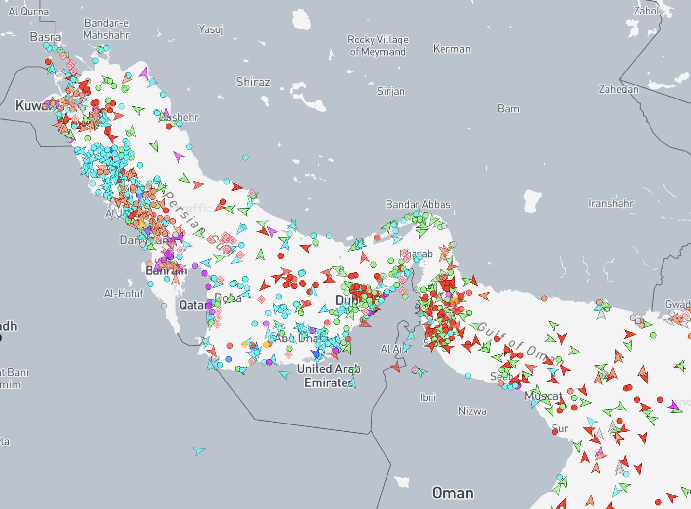

Operational Theater Update
Executive Summary
Dispatch #003 explained why energy chokepoints matter. Dispatch #004 examines what happens when one of those chokepoints becomes a battlefield.
Iran is suspected of jamming or spoofing commercial ship navigation systems operating in the Persian Gulf.
At its narrowest point, the Strait of Hormuz is only about 21 miles wide.
Large oil tankers must remain within deep-water shipping lanes, which can place them only about 10 miles from Iran’s coastline.
Commercial ship transits through the strait have reportedly fallen from more than 150 vessels per day to only a handful.
At least sixteen foreign commercial vessels have been severely damaged in the Persian Gulf region since hostilities began on February 28. Several sailors aboard those ships have reportedly been injured or killed.
The struggle to control these maritime energy corridors may become the decisive factor shaping the next phase of the conflict.
Key Developments
- Commercial shipping traffic through the Strait of Hormuz has collapsed.
- Iran is suspected of jamming or spoofing ship navigation systems.
- Multiple foreign commercial vessels have been damaged since Feb. 28.
- International naval forces are preparing operations to reopen the corridor.
Charlemagne's Strategic Map Room: Persian Gulf Energy Corridor
Maps often reveal what headlines conceal.

Real-time vessel traffic across the Persian Gulf and Strait of Hormuz based on AIS tracking data. Ship clustering illustrates the extraordinary concentration of commercial traffic in one of the world’s most important maritime energy corridors. Source: MarineTraffic.
A maritime chokepoint does not need to be fully closed to disrupt global energy markets.
If insurers withdraw coverage, if shipping companies divert vessels, or if naval escorts become necessary, the chokepoint has already begun to exert strategic leverage.
Strategic Development
An international coalition is beginning to take shape around the objective of reopening the Strait of Hormuz and restoring commercial passage through the world’s most important maritime oil corridor.
Strait of Hormuz
As reported by the U.S. Energy Information Administration, the Strait of Hormuz connects the Persian Gulf with the Gulf of Oman and the Arabian Sea. It remains one of the world’s most important oil chokepoints, carrying roughly one-fifth of global oil consumption through a narrow maritime corridor.
Operational Reality
Unlike wider ocean routes where commercial vessels can disperse, the Strait of Hormuz forces large tankers into narrow deep-water lanes where maneuver is limited. That makes commercial traffic unusually vulnerable to mines, missile fire, drones, fast-attack craft, and electronic navigation interference.
Energy Shock
Governments and energy authorities are already reacting by preparing or releasing strategic petroleum reserves. Such measures suggest that policymakers view the present crisis not as a temporary shipping delay but as a real threat to global supply stability and energy price security.
Suez Canal
A critical shortcut between Asia and Europe. Disruptions here force tankers to reroute thousands of miles around Africa's Cape of Good Hope.
Strait of Malacca
One of the world's busiest shipping lanes, essential for energy deliveries to East Asia.
But this, too, forces tankers to travel thousands of extra miles.
Situation Assessment
Each of these locations sits along routes connecting major energy exporters with major industrial and export economies.
These chokepoints have historically remained open because the global economic system depended upon stability. But the international environment is shifting.
Several recent developments suggest growing pressure:
- increased military patrols around the Strait of Hormuz
- instability affecting shipping lanes in the Red Sea
- rising geopolitical tension across the Indo-Pacific
- expanding naval capabilities among regional powers
None of these developments alone signals an immediate crisis. But together, they indicate that the security of energy corridors is no longer taken for granted.
Strategic Implications
The struggle over the Strait of Hormuz reveals how quickly energy infrastructure can become a theater of military and geopolitical leverage.
Many of the countries involved in the emerging economic alignment are either:
- major energy producers
- critical transit states
- major energy consumers
This creates a triangular strategic system involving:
- Energy supply
- Energy transportation
- Energy settlement mechanisms
Control over any one of these elements can shift geopolitical leverage. Control over all three would reshape the international system.
This is why the competition surrounding energy chokepoints is unlikely to diminish in the coming years.
Students of biblical prophecy often note that Scripture describes periods when global trade, conflict, and political authority become increasingly concentrated. Whether present developments ultimately align with those patterns remains uncertain, but the convergence of maritime vulnerability, economic pressure, and military escalation deserves our close attention.
Charlemagne’s Conclusion
The Strait of Hormuz is not merely a geographic feature. It is a pressure valve for the modern industrial world.
When global commerce depends upon a corridor barely twenty miles wide, geography itself becomes strategy. Every tanker that passes through that narrow passage carries not only oil, but the stability of the international system that depends upon it.
In ordinary times, hundreds of ships move through these waters quietly and without notice. Today, the same corridor has become one of the most dangerous pieces of maritime geography on earth.
The crisis unfolding in the Persian Gulf illustrates a fundamental truth of geopolitics: power often concentrates where the world’s most critical resources must pass through the narrowest places.
And when those narrow places become contested, the consequences rarely remain confined to the region where the conflict began.
— Charlemagne
For now, the world watches the Strait of Hormuz. But history suggests that when chokepoints ignite, the shock rarely stops at the shoreline.